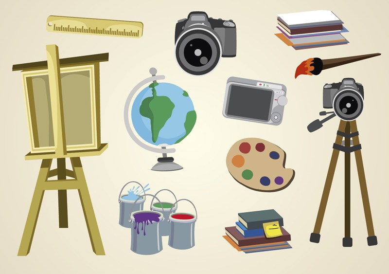
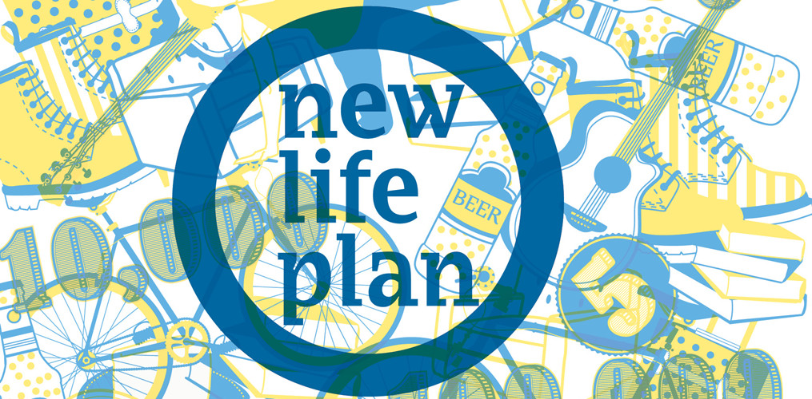

想起小学毕业那会儿额，没看错，说的是小学毕业流行的是一人搞一本毕业纪念册，全班的同学之间互相传递，并在上面填上自己的个人信息，联系方式，以及一些对同学未来的祝福和寄语等。那时候的小朋友个个淳朴，填得都很认真，就连个人兴趣爱好一栏也是经过仔细思考的，常见的答案都是读书，听音乐，打球；要是换作现在我想很有可能会大面积的出现「性别：男；爱好：女；特长：JB」这样比较污的内容。
仔细想想，自己的兴趣爱好是什么？这个问题的纠结程度和「自己的理想或是梦想是什么？」有的一拼。之所以会纠结，很大一部分的原因是心境和环境都是在不停的变化着的。所以你可能会说，我今天的兴趣是玩炉石传说，明天可能就没兴趣了，转而有兴趣看科幻小说了，又过了两天觉得看小说也没意思，爱好又变成养小狗了。那么今天我就要从根本上来告诉你，朋友，你弄错了，你说的那些都不是真正的兴趣爱好。
而且不光这些不是，生活中还有很多东西都不能算是真正的兴趣爱好，在这里我先帮你一起把它们识别出来。通过识别这些「伪兴趣」，有助于去伪存真，接下来识别真兴趣就会简单许多。
「三分钟热度」的不是真兴趣
如果你平时曾经留意观察过儿童的行为，就会明白什么是「三分钟热度」。比如当某个小孩得到自己喜欢的玩具，一开始会很开心很兴奋，但是几天（甚至几小时）之后，这种开心兴奋状态就消失了，他/她的兴趣点已经转移到其它地方。 显然，这种孩童似的「三分钟热度」不是真正的兴趣。这个很好理解，就不多说了。
带有功利动机的不是真兴趣
在上一年那波牛市行情的时候，可以看到很多股民成天盯着电脑上的炒股软件，片刻不停。如果你以为他们对炒股感兴趣，那就错了。大部分股民其实对炒股这个行为本身并没有兴趣，他们这么做是为了赚钱。换句话说，他们的行为带有「功利因素”，因此不能算是真正的兴趣。 （当然也确实有一小撮股民是真正喜欢「炒股」这个行为本身，但是我相信这类人非常之稀少）。
动机是来自外在的不是真兴趣
所谓「外在的动机」，大致包括如下：
1. 被别人强迫去做某事
（比如很多小孩被父母强迫去学钢琴）
2. 受到社会观念的约束而去做某事
（比如大学填志愿的时候，报考热门专业）
3. 为了得到他人的认可而去做某事
（比如某些人为了出名而去做某事）
4. 受到法律的约束而去做某事
（比如很多国家的义务兵役制）
纯感官刺激导致的行为不是真兴趣
所谓「真正的兴趣」，显然应该是人类独有的（其它动物不会有）。而「纯感官的刺激」导致的行为，不光人类会有，其它动物也会有。所以，纯感官的刺激导致的行为，不能算真正的兴趣。对这类行为，可以称之为「本能的驱使」。 为了便于理解，举几个例子：吃顿美餐、泡个温泉、啪啪啪等等。
被动的行为不是真兴趣
这里所说的被动，不是指他人的强迫，他人的强迫的例子已经在上面外在的动机中分析过了。这里所说的被动，指的是行为本身的特性。换句话说，当某个行为不需要依靠你的主观意识，不需要发挥你的主动性，那么，就称之为「被动的行为」。为了便于理解，同样举个例子： 有很多人喜欢一边工作一边听音乐。在这种情况下，「听音乐」这个行为是被动的。
始终停留在心理舒适区不是真兴趣
心理舒适区经常被用来描述一种「心理状态」，人在处于这种状态的时候，会感觉到放松，没有压力和焦虑。 如果你处于某个环境中，在该环境下所需要的行为你都可以轻松搞定，那么，你就处于「心理舒适区」。比如你问周围的一些人，他们业余时间有啥兴趣和爱好，如下这几种会很常见： 上网闲逛 、看电视剧 、看娱乐节目 等。在我看来，上述这几种行为都属于「让自己停留在心理舒适区」。这类行为，很多都是为了打发时间，不能算是真正的兴趣。
说了这么多不是真正的兴趣爱好的例子，那么我们不禁要问，真正的兴趣是什么样的呢？有一些什么样的特征呢？
首先是动机的内在性。真正的兴趣，其动机完全来自于内心，而不是外部世界。只有这样产生的兴趣，才是纯粹的。换句话说，这样的动机，不会随着外部世界的改变而改变。
其次是时间的持久性。对于真正的兴趣，通常能持续很长时间至少几年，多达几十年。为什么「真正的兴趣」能持续这么久呢？暂时先卖个关子，稍候会有详细分析。
第三是思维要有高度的参与。前面提到了两种反例，分别是「纯感官刺激的行为」和「被动行为」。与这两种相对应的是：真正的兴趣，其行为通常需要思维的高度参与。比如下面这些活动都需要思维的高度参与，也都有可能成为真正的兴趣：
写程序
写作
作曲
绘画
摄影
电子游戏
棋牌游戏
......

第四是快感的内在性。前面提到了「动机的内在性」。这里所说的「快感的内在性」也是类似的。也就是说，真正的兴趣所导致的快感，不需要依赖外部环境。 数学史上很牛逼的费马，他完全是凭兴趣研究数学，而且他的很多研究成果都没有发表。比如他最有名的那个「费马大定理」，是他儿子整理遗物的时候发现的；再比如「费马小定理」是他与朋友的往来书信中顺便提及的。 也就是说，他的快乐不是依赖「荣誉感」之类的外在因素。 顺便说一下：费马严格来说连「数学家」都不是。他的正式职业是律师和法官，数学只是他的业余爱好。
第五是成瘾性。如第四点所说，真正的兴趣会给你带来快感。因此，真正的兴趣通常也会带来成瘾性。 关于「快感」与「成瘾性」的关系，这是心理学和脑神经学的重要研究话题，但是这个话题与本文的主题无关，就不展开细说了。因此你会看到有些程序员连续几周没有写代码，就会手痒，即便是转做管理很多年不需要亲自写代码，但还是尽量找机会亲自操刀。
第六是愿意付出较高的代价。从事自己真正感兴趣的活动，你会愿意付出其它的代价。因为前面提及的「快感」会给予你补偿。换句话说：快感会抵消掉「付出代价」所导致的负面情绪。所以你会看到某个摄影爱好者为了拍摄到火山喷发的镜头，愿意冒生命危险待在火山口附近。
第七是持续的自我提升，走出心理舒适区。如果某个活动是你真正的兴趣，那你不会满足于「停留在在该领域的心理舒适区」。你会不断尝试去突破自己的心理舒适区。通过不断地突破自己的心理舒适区，你在这个领域的能力就会得到提升；同时，你的心理舒适区的范围也扩大了。 当然，突破心理舒适区不一定容易，有的时候甚至是很困难的。但是在突破的过程中，「过程性的快感」会伴随着你；一旦实现突破，你会获得「结果性的快感」。
第八是存在「心流」状态。当你从事自己真正感兴趣的活动，有时候你会进入到「心流」的状态。这是心理学的专门术语，洋文称之为「flow」，这种状态大概就是传说中的「物我两忘」。在这种状态下，你会忘记了时间的存在，甚至忘记自己的存在，全身心都融入到你感兴趣的活动当中。 因此你会看到某些非常热衷围棋的爱好者，在对弈或打谱的时候，会进入到这种状态。此时他们的眼中只有棋盘，周围的世界仿佛都不存在了。
如果你能找到自己真正的兴趣爱好，那么恭喜你，你的人生至少会产生如下一些影响：
更多的快乐。这是最显著的一个影响。也就是前面多次提及的「快感」。
更充实的生活。有了真正的兴趣爱好，通常就不需要找一些事情来「打发时间」。反之，你可以把所有的闲暇时间都用在你感兴趣的领域和活动。相比之下，那些经常感叹生活空虚的人，通常都缺乏真正的兴趣和爱好。
兴趣与工作的结合。如果你够幸运的话，还可以让自己的兴趣成为自己的职业。这是很幸福的事情，如此一来，就把工作和娱乐合为一体。你将不再有工作时间和业余时间的差异，不论是工作时间还是业余时间，对你而言都是娱乐时间，这感觉真是很棒棒哒！ 当这两者统一之后，还有更多其它的好处。比如说，你在自己的工作中，就可以比别人走得更远，因此也就更有可能成为该领域的优秀者。一旦你成为某个领域的优秀者，你就具备了竞争优势。这种情况下，你通常不至于太缺钱（当然，也会有极少数例外）。

说了这么多识别兴趣爱好的真伪的方法和判断标准，以及有真正兴趣爱好对人生产生的积极影响之后。你现在可以认真的思考一下自己到底有啥兴趣爱好了吧？